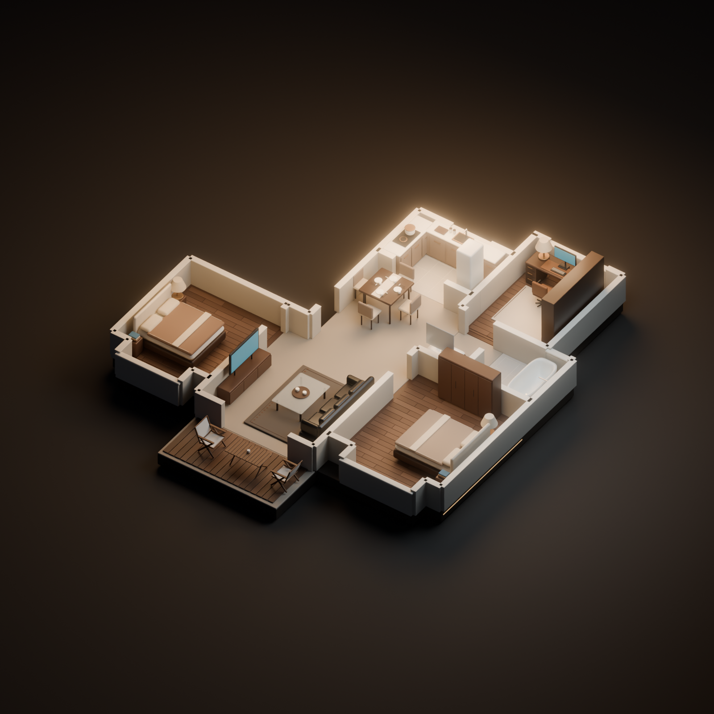

家
。
AFTER HOURS
我的私人宇宙
夜色刚好
关于 ↗
A PLACE TO CALL HOME
日常，也值得探索。
拖动旋转 · 滚轮缩放 · 点击房间走近一点
EXPLORE THE HOUSE
01
客厅
↗
02
书房
↗
03
卧室
↗
04
阳台
↗
⌂
全屋
☾
夜景
▦
俯视
⟳
环绕
♫
静音
WELCOME TO MY LITTLE WORLD
灯亮了，
进来坐坐。
一个属于自己的小小世界。
正在点亮这个家
↗
准备中 · 0%
MADE OF ORDINARY MOMENTS
房间还没有加载出来
请检查网络后再试一次。
重新加载
先看全屋效果
×
请开启 JavaScript 来探索这个家。
